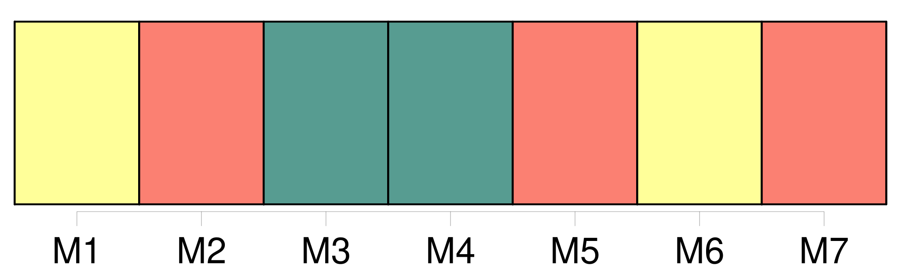

Longueur nb maillons : 7 mentions |
  |
Lorsque [les parens] ou alliés de l'une ou de l'autre ligne se trouveront en nombre insuffisant sur les lieux, ou dans la distance désignée par l'article 407, le juge de paix appellera, soit [des parens] ou [alliés domiciliés à de plus grandes distances] , soit, dans la commune même, des citoyens connus pour avoir eu des relations habituelles d'amitié avec le père ou la mère du mineur. [1 phrases]
Le juge de paix pourra, lors même qu'il y aurait sur les lieux un nombre suffisant de [parens] ou alliés, permettre de citer, à quelque distance qu'ils soient domiciliés, [des parens] ou alliés plus proches en degrés ou de mêmes degrés que les parens ou alliés présens ; de manière toutefois que cela s'opère en retranchant quelques uns de ces derniers, et sans excéder le nombre réglé par les précédens articles. [4 phrases]
[Les parens] , alliés ou amis, ainsi convoqués, seront tenus de se rendre en personne, ou de se faire représenter par un mandataire spécial. [2 phrases]
[Tout parent] , allié ou ami, convoqué, et qui, sans excuse légitime, ne comparaîtra point, encourra une amende qui ne pourra excéder cinquante francs, et sera prononcée sans appel par le juge de paix. |
La ressource peut être téléchargée sur la page Ortolang
Si vous avez des questions ou vous voyez des erreurs, merci d'envoyer un mail à silvia.federzoni89@gmail.com
Site développé par S. Federzoni (contact)